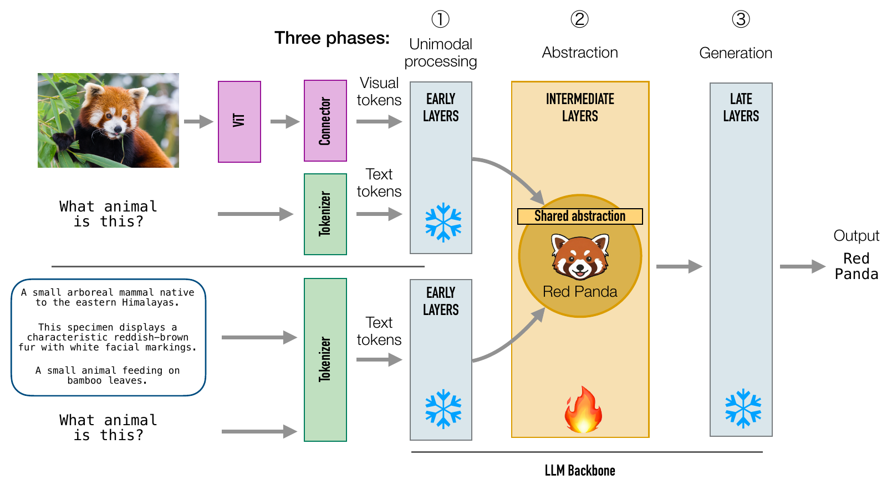
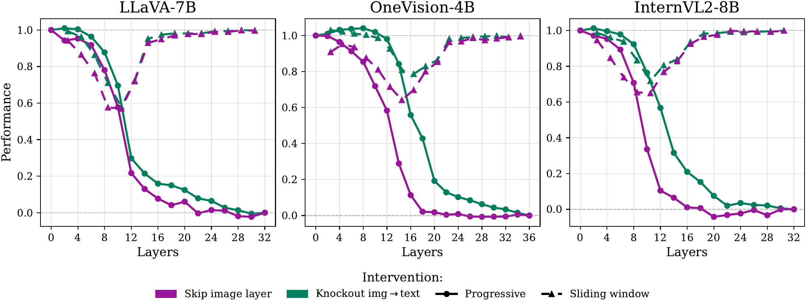
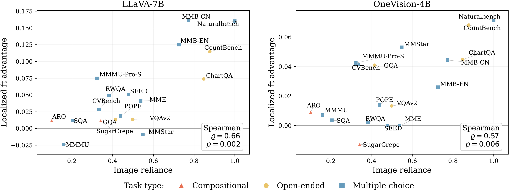

Visual and textual abstractions align in the intermediate layers of VLMs. We compare a multimodal prompt, where the image is passed to the language model through the connector, with a text-only prompt, where natural-language captions replace the image, and track the hidden representation of the final input token across the LLM backbone. Visual instruction tuning aligns image- and text-derived representations primarily in intermediate layers, and fine-tuning this region alone recovers nearly full vision-language performance.
Visual instruction tuning effectively adapts a pre-trained Large Language Model (LLM) to process image information alongside text. Yet, it remains unclear how visual features are embedded into the layer-wise hierarchy of abstractions of the LLM backbone. Across a diverse set of vision-language architectures, we show that instruction tuning primarily serves as a bridge, embedding visual features directly into the intermediate semantic layers of the LLM, bypassing the early layers devoted to unimodal processing. With probing analyses and causal interventions, we show that these intermediate layers are the semantic core of vision-language processing and play a critical role in the performance on a broad set of multimodal benchmarks. In addition, by comparing the geometry of semantically equivalent visual and textual representations, we find that fine-tuning extends and strengthens the existing abstraction phase, aligning visual features with pre-existing textual ones. Finally, we confirm the functional role of this localized alignment by restricting fine-tuning to intermediate layers alone: this strategy preserves the performance of full fine-tuning on vision-centric benchmarks while reducing training time. Our results suggest that multimodal integration is a localized phenomenon driven by the repurposing of the internal abstraction engine of the LLM.

Average performance over six vision–language tasks (GQA, MMBench-cn, MMBench-en, MME, SeedBench, and VQAv2) for LLaVA-7B, OneVision-4B, and InternVL2-8B, normalized to the full model. Purple curves skip image-token layers and green curves knock out image-to-text attention.

Each point is a benchmark. The x-axis measures image reliance: the normalized gap between image-conditioned and text-only performance, averaged over four reference VLMs.
@article{palacios2026visual,
title = {Visual Instruction Tuning Aligns Modalities through Abstraction},
author = {Palacios, Luis and Basile, Lorenzo and Doimo, Diego and Cazzaniga, Alberto},
journal = {arXiv preprint arXiv:2606.03871},
year = {2026}
}